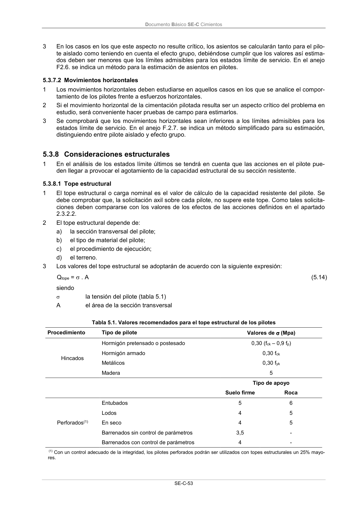

DB-SE-C · 5.3.8 Consideraciones estructurales · versión 2019-12-20 · capa oficial
Formatos: JSON compacto · Markdown · PDF fuente
Ámbito del documento · texto del ámbito · documento y tablas
ID técnico a0135 · PDF pág. 58 · jerarquía no validada por persona · contrastado con el literal de la página 58 (candidato tipográfico); no validado por persona · padre: raíz
5.3.8 Consideraciones estructurales 1 En el análisis de los estados límite últimos se tendrá en cuenta que las acciones en el pilote pue- den llegar a provocar el agotamiento de la capacidad estructural de su sección resistente.

PDF fuente redistribuible: copia fiel enlazada en esta página (SHA256 verificado).